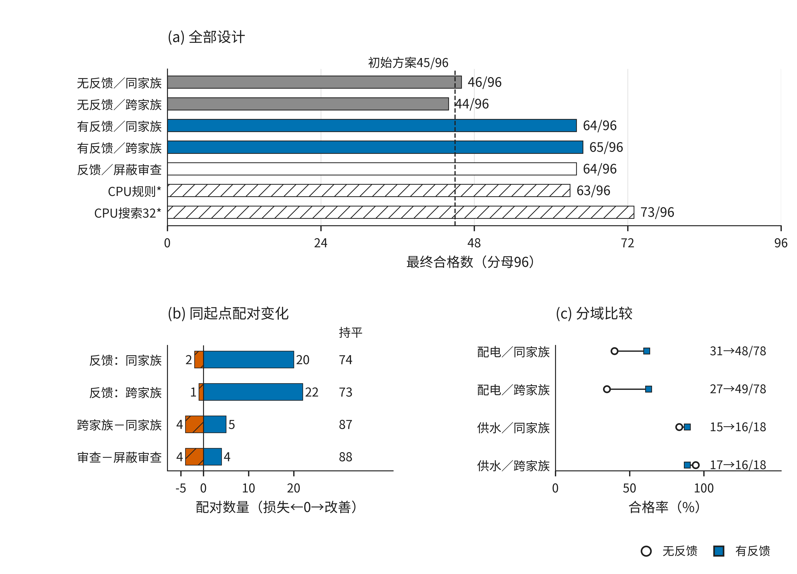
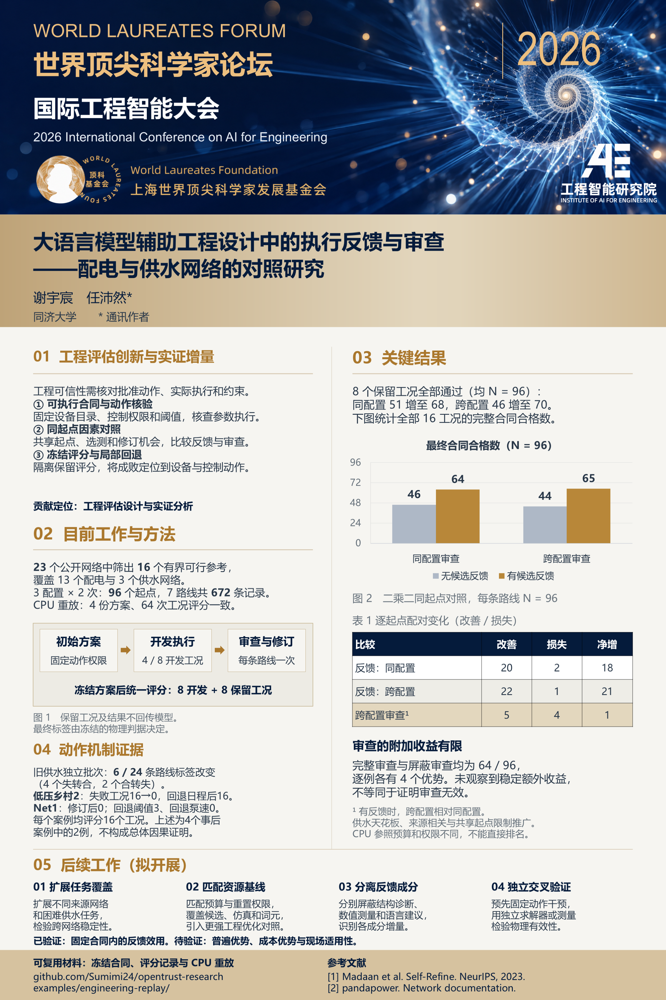

候选执行反馈带来增益
完整合同合格数由同配置的 46/96 增至 64/96，跨配置的 44/96 增至 65/96。收益主要来自配电。
——配电与供水网络的对照研究
在固定设备权限和物理判据下，区分候选执行反馈、审查配置与实际动作对设计合格性的影响。
2026-10-15 修订：正文压缩、完整证据附录、可运行 CPU 重放示例。没有新增模型实验。
23 个公开源网络经有界可行参考筛选，入选 13 个配电与 3 个供水网络。
3 种声明模型配置、每网重复 2 次。反馈对照共享初稿、选测和一次修订机会。
每份方案按 8 个开发和 8 个保留工况评分。路线共享起点，不是 672 道独立工程题。
完整合同合格数由同配置的 46/96 增至 64/96，跨配置的 44/96 增至 65/96。收益主要来自配电。
有反馈时，跨配置比同配置有 5 个改善、4 个损失。完整审查与屏蔽审查均为 64/96，各有 4 个逐例优势。
独立旧供水批次有 6/24 条路线在动作语义复评后改变标签。求解器运行成功，还需要确认执行了声明的动作。

| 指标（每格分母 96） | 同配置：无反馈 / 有反馈 | 跨配置：无反馈 / 有反馈 |
|---|---|---|
| 完整合同：16 工况全部通过 | 46 / 64 | 44 / 65 |
| 保留组：8 工况全部通过 | 51 / 68 | 46 / 70 |
保留工况结果也有改善，但仍来自原网络的冻结条件，不是独立新网络上的泛化验证。完整审查屏蔽同时移除判断、违反记录、覆盖缺口和建议，不能称为纯语言解释消融。
先固定源网络、批准动作和约束，再生成方案、执行所选开发测试、审查与修订。最终方案冻结后统一评分，保留测量不回传模型。点击步骤查看输入与输出。
固定设备目录、控制权限、运行工况和量化阈值。参考方案用于资格核验，不提供给模型。
无候选反馈路线仍可看到源网络的开发基线。主对照匹配共同起点、选测和修订机会，未匹配词元、金额或内部推理计算。
从冻结网络和方案重新运行物理仿真，核对原始评分。执行阶段不需要模型接口、访问凭据或网络连接。
使用 Python 3.12，解压后进入示例目录：
python -m pip install -r requirements.txt python run_demo.py
对自己的 Net1 方案评分：
python run_demo.py --case Net1 --design candidate.json --output candidate_results.json
已在原研究环境、异目录解压后，以及不继承系统包的全新 Windows/Python 虚拟环境中完成双域重放。Linux/macOS 尚未验证。
这些是已有方案的重放验证，没有新增模型实验、独立物理模型验证或新网络泛化证据。示例代码采用 MIT 许可；第三方网络与软件保留各自许可。公开的保留工况用于复核，后续研究应为新的最终评估建立独立条件。
修订稿将主要发现集中在短正文中，网络明细、分层结果、敏感性分析和完整局部案例保留在附录。论文的材料说明给出 CPU 重放范围与实际验证边界。

目前完成固定合同评估、同起点反馈对照、冻结记录分析和双域 CPU 最小重放。后续工作的价值要通过新的实验兑现：
增加不同来源的网络，在看结果前确定合同与评估工况，检验结论在新任务上的稳定性。
统一候选数量、仿真预算及重置权限，引入更强的领域优化方法。
分别检验结构诊断、数值测量和审查建议的增量，避免把完整审查屏蔽解释为纯语言消融。
预先固定动作干预，使用独立求解器或测量检验物理有效性。
这些文献帮助定位研究，不构成“首创证明”。链接与研究范围如下。
生成反馈修订已有先行研究。本轮查询核查摘要，不声称独立复现。
LLM-EPANET 自然语言交互与可执行仿真。本轮核查摘要与来源链接，不与其准确率横向排名。
已存在生成式 AI 支持供水扩容与工程函数调用。本轮阅读公开正文框架与案例段落。
上层语境理解与下层优化的已有分工。本轮核查摘要，不声称复现其控制算法。
公开源网络、结构与模型使用。实际版本与文件哈希保存在实验记录。
供水源模型与库来源。实际使用 WNTR 1.5.0 及 EPANET。
CIGRE Kerber 公开工程网络与 CPU 潮流计算。实际使用 pandapower 3.5.6。
已有自然语言到求解器模型、结构验证与迭代修订；本轮核查摘要。
已有数值验证与工程审查；本轮核查摘要，不声称复现。
前期协议认证与 RTL 功能验证独立保留，结果不混入当前配电与供水研究。